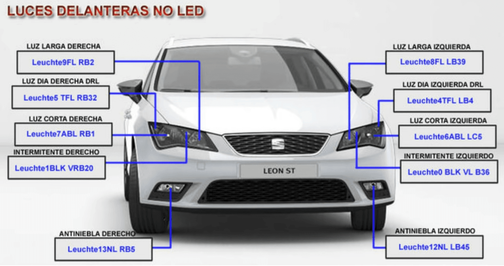
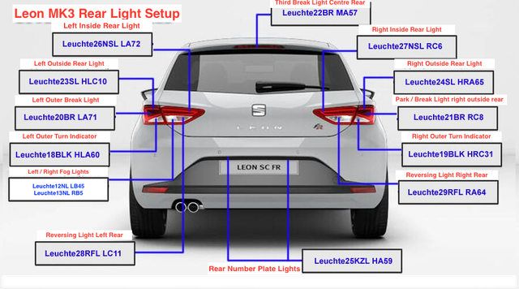
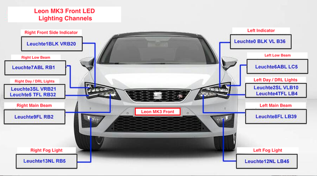
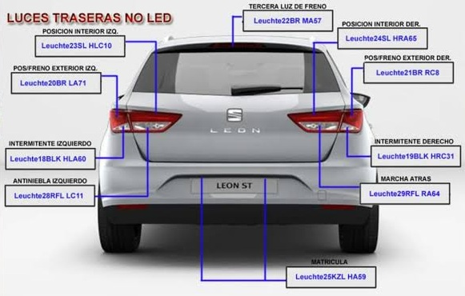

Araç: 2013 SEAT Leon 5F 1.4 TSI ACT FR 140 hp · MQB · halojen ön far · ampullü gündüz farı · ön sis var · LED stop (sinyal ampullü) · sunroof yok · FR ambiyans
Ne yapmak istediğini yaz: hangi modül, hangi kanal, hangi değer, değiştirince ne olur. MQB (Golf 7/8, Passat B8, Octavia 3/4, Leon 3, Tiguan 2, Polo 6) ve PQ (Golf 5/6, Passat B6/B7, Jetta, Octavia 2) için.
Hangi lambanın hangi Leuchte kanalı olduğunu araç üzerinde gör. Senin farın Full LED ise LED, ampullü ise Halojen sekmesine bak. Görsele dokununca büyük açılır.




MQB'de 09 → Adaptasyon içinde lambalar Leuchte kanalları olarak durur. Örnek: Leuchte3BLK VL A20 → 3 numaralı kanal, ön sol sinyal, A20 pini. Kanal adındaki kısaltmayı aşağıdan çöz. Her kanalın alt ayarları: Lasttyp (lamba tipi/watt), Lichtfunktion A…H (kanalın hangi görevde yanacağı), Dimmwert AB…GH (parlaklık 0–127).
| Kod | Modül | Not |
|---|---|---|
| 31347 | 09 Merkezi Elektronik | MQB ve birçok PQ BCM için kodlama/adaptasyon öncesi. Sadece gerekirse sorulur. |
| 20103 | 17 Gösterge paneli | MQB gösterge kodlamasında sık kullanılır. |
| 19249 | 44 Direksiyon desteği | Temel ayar ve kodlama için. Yanlış ayar direksiyon arızası yapar. |
| 40168 | 03 ABS / Fren | Kodlama için. Fren modülünü bilmeden kurcalama. |
Kodlar araca ve yazılıma göre değişebilir. VCDS reddederse zorlamayın; tekrarlanan hatalı girişler modülü bir süre kilitler.
Kendi aracında denediğin kanalı buraya kaydet, aramada çıksın. Bu tarayıcıda saklanır, başka cihazda görünmez.